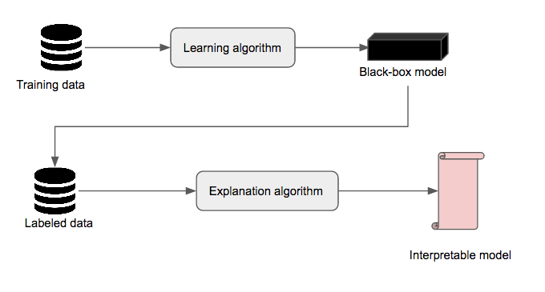
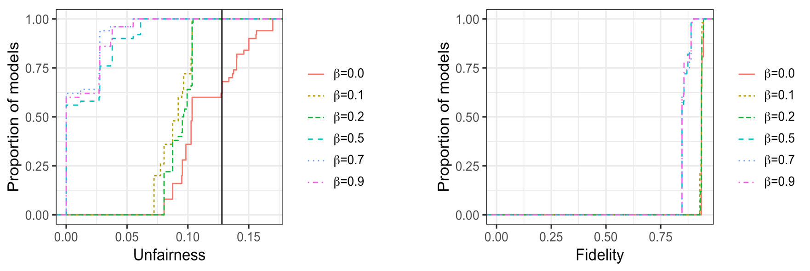
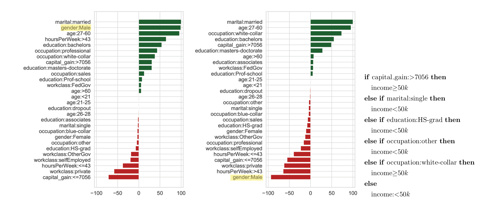
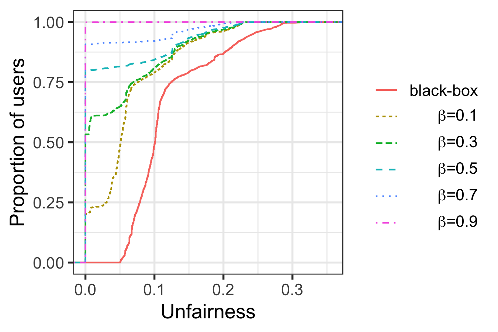

Fairwashing in machine learning
Explainability
Fairness
Fairwashing
Summary of a paper: Fairwashing – the risk of rationalization
Machine learning is now used in every aspect of our life, from entertainment to high stakes decision-making processes such as credit scoring, medical diagnosis, or predictive justice. The potential risk of incorrect decisions has raised the public demand for an explanation of the decisions of machine learning models. In addition to this public demand, all across the world, several communities and government initiatives are emerging, asking for more transparency in machine learning models’ decisions, and the development of an ethically-aligned AI. As an example, in Europe, the new General Data Protection Regulation has a provision requiring explanations for the decisions of machine learning models that have a significant impact on individuals (Goodman and Flaxman 2017).
We believe that because of this particular combination of regulations and public demand for ethically-aligned development of AI, a dishonest machine learning models’ producers may be tempted to perform fairwashing. We define fairwashing as promoting the false perception that a machine learning model complies with a given ethical requirement while it might not be so. The risk of fairwashing is all the more possible because the right to explanation as defined in current regulations does not give precise directives on what it means to provide a ‘’valid explanation’’ (Wachter, Mittelstadt, and Floridi 2017; Edwards and Veale 2017), leaving a legal loophole that can be exploited by a dishonest model’s producer to cover up a possible misconducts of its black-box model by providing misleading explanations.
To demonstrate this risk, we consider two variations of the black-box explanation problem and show that one can forge misleading explanations that comply with a given ethical requirement. In particular, we use fairness as the ethical requirement and demonstrate that given a black-box model that is unfair, one can systematically deduce rule lists with high fidelity to the black-box model while being considerably less unfair at the same time.
Prerequisites 🚲
Fairness ⚖️
There are several definitions for fairness in machine learning (Verma and Rubin 2018). Central to all these definitions is the notion of the sensitive attribute \(s\) for which non-discrimination should be established. An example of such attribute can be the gender, ethnicity, or religion. For this work, we use demographic parity (Calders, Kamiran, and Pechenizkiy 2009) as fairness metric. Demographic parity requires the prediction \(\hat{y}\) of the black-box model to be independent of the sensitive attribute \(s\), that is, \(P(\hat{y}=1 | s= 1) = P(\hat{y}=1 | s= 0)\). We therefore define unfairness as \(\mathsf{unfairness}=|P(\hat{y}=1 | s= 1) - P(\hat{y}=1 | s= 0)|\).
Black-box explanation
Black-box explanation is the problem of explaining how a machine learning model – whose internal logic is hidden to the auditor and generally complex – produces its outcomes. An explanation can be viewed as an interface between humans and a decision process that is both an accurate proxy of the decision process and understandable by humans (Guidotti et al. 2018). Figure @ref(fig:pipeline) shows an example of a black-box explanation pipeline. First, a black-box model \(M_b\) is obtained using a particular learning algorithm (e.g., random forest, SVM, neural network…) on a particular dataset \(D_{train}\). Then, the black-box model is used to label another dataset \(D_{labeled} \neq D_{train}\). Finally, an explanation algorithm takes as input \(D_{labeled}\) and produces an interpretable model \(M_i\). Examples of interfaces accepted in the literature as interpretable models include linear models, decision trees, rule lists, and rule sets. In this work, we use rule lists as explanation models. We consider two variations of the black-box explanation problem, namely model explanation and outcome explanation. The former consists in providing an explanation model that explains all the decisions of the black-box model, while the latter consists of producing an explanation model that explains a particular decision of the black-box model. To assess the performance of an explanation algorithm, we rely on the notion of fidelity (Craven and Shavlik 1996), which is the accuracy of the explanation model \(M_i\) relative to the black-box model \(M_b\) on some instances \(X\). Simply put, \(\mathsf{fidelity} = \frac{1}{|X|} \sum_{x \in X} \mathbb{I}(M_i(x)=M_b(x))\).
Rule lists 🗒️
A rule list (Rivest 1987) \(r= (d_p, \delta_p, q_0, K)\) of length \(K \geq 0\) is a \((K+1)-\)tuple consisting of \(K\) distinct association rules \(p_k \to q_k\), in which \(p_k \in d_p\) is the antecedent of the association rule and \(q_k \in \delta_p\) its corresponding consequent, followed by a default prediction \(q_0\). The rule list below predicts whether a person is likely to make at least 50k per year.
if [capitalGain:>=5119] then [high]
else if [maritalStatus:single] then [low]
else if [capitalLoss:1882-1978] then [high]
else if [workclass:private && education:bachelors] then [high]
else if [education:masters_doctorate] then [high]
else [low]To make a prediction using a rule list, the rules are applied sequentially until one rule applies, in which case the associated outcome is reported. If none of the rules applies, then the default prediction is reported.
CORELS
CORELS (Angelino et al. 2018) is a supervised machine learning algorithm which takes as input a feature vector \(X\) and it associated label vector \(Y\), all assumed to be binary, and finds the rule list \(r\) that minimize the regularized empirical risk: \(\mathsf{misc(r, X, Y)} + \lambda K\), where \(\mathsf{misc(r, X, Y)}\) is the misclassification error of the rule list and \(\lambda \geq 0\) is a regularization parameter used to penalize longer rule lists. It represents the search space of the rule lists as a trie and uses an efficient branch-and-bound algorithm to prune it.
Model enumeration
In this work, we use a rule list enumeration technique introduced in (Hara and Ishihata 2018). This algorithm takes as input the set \(T\) of all binary predictors, and enumerate rule list models in the descending order of their objective function. It maintains a heap \(\mathcal{H}\), whose priority is the objective function value of the rule lists and a list \(\mathcal{M}\) for the enumerated models. First, it starts by computing the optimal rule \(m=\mathsf{CORELS}(T) = (d_p, \delta_p, q_0, K)\) for \(T\) using the CORELS algorithm. Then, it inserts the tuple \((m, T, \emptyset)\) into the heap. Finally, the algorithm repeats the following three steps until the stopping criterion is met: * Extract the tuple \((m, S, F)\) with the maximum priority value from \(\mathcal{H}\). * Output \(m\) as the \(i-\)th model if \(m \notin \mathcal{M}\). * Branch the search space: compute and insert \(m' =\mathsf{CORELS}(S \setminus \{t_j\})\) into \(\mathcal{H}\) for all \(t_j \in \delta_p\).
Rationalization
Problem formulation
We define rationalization as the problem of finding an interpretable surrogate model \(M_i\) approximating a black-box model \(M_b\), such that \(M_i\) is fairer than \(M_b\). In particular, we distinguish model rationalization and outcome rationalization.
Given a black-box model \(M_b\), a set of instances \(X\) and a sensitive attribute \(s\), the model rationalization problem consists in finding an intrepretable global model \(M_i^g\) such that \(\epsilon(M_i^g, X, s) > \epsilon(M_b, X, s)\), for some fairness evaluation metric \(\epsilon(\cdot, \cdot, \cdot)\). The outcome rationalization problem is similar to the model rationalaization problem, but consider only a single data point, and provide an explanation for this particular data point and its neighborhood. More precisely, given a black-box model \(M_b\), an instance \(x\), a neighborhood \(\mathcal{V}(x)\) of \(x\), and a sensitive attribute \(s\), the outcome rationalization problem consists in finding an intrepretable local model \(M_i^l\) such that \(\epsilon(M_i^l, \mathcal{V}(x), s) > \epsilon(M_b, \mathcal{V}(x), s)\), for some fairness evaluation metric \(\epsilon(\cdot, \cdot, \cdot)\).
LaundryML
We propose LaundryML, an algorithm to solve the rationalization problem efficiently. First, LaundryML uses a modified version of CORELS in which we define the new objective function as \(\mathsf{(1-\beta) misc(\cdot)} + \mathsf{\beta unfairness(\cdot)}+ \lambda K\), where \(\mathsf{misc(\cdot)}\) is the misclassification error of the rule list, \(\mathsf{unfairness(\cdot)}\) returns the unfairness of the rule list, \(\lambda \geq 0\) is a regularization parameter used to penalize longer rule lists, and \(\beta \geq 0\) is the weight of the unfairness regularization. Then, it uses the customized CORELS algorithm to enumerated rule list models. Finally, it uses a threshold for the unfairness to select the models that can be used for rationalization.
To solve the model rationalization problem for a set \(X\) of instances, LaundryML will take as input the tuple \(T=\{X, y\}\) formed the instances \(X\) and the predictions \(y\) of the black-box model on \(X\). To solve the outcome rationalization for a particular instance \(x\), the inputs of LaundryML will be the instances \(T_x = \mathsf{neigh(x, T)}\), some neighborhood searching algorithm \(\mathsf{neigh(\cdot)}\).
Experiments
We train a Random Forest model on Adult Income dataset to mimic the black-box model. Our black-box model achieves respectively an accuracy of \(84.31\%\), a precision of \(79.78\%\), and an unfairness of \(0.13\) on a set of instances we use to mimic a suing group (that accuses the black-box model on being unfair).
Results for model rationalization
We perform fairwashaing through model rationalization by explaining the decisions of the black-box model with an interpretable model (here a rule list) that is less unfair than the black-box while having a fidelity greater than \(90\%\). For the model rationalization experiment, we set \(\lambda=0.005\), and \(\beta =\{0, 0.1, 0.2, 0.5, 0.7, 0.9\}\), and we enumerate 50 models.

The results in Figure @ref(fig:global) show that one can obtain fairer explanation models that have good fidelity. In particular, we observe that as \(\beta\) increases, both the unfairness and the fidelity of the enumerated models decrease. Overall, the best model we obtain has a fidelity of \(0.908\) and an unfairness of \(0.058\). In Figure @ref(fig:audit), we compare the selected rationalization model to the black-box model in term of relative feature dependence ranking. The observations show that the sensitive attribute is ranked \(2\)nd (respectively \(28\)th) with the black-box model (respectively the rationalization model).

Results for outcome rationalization
We perform fairwhasing trough outcome rationalization by explaining each rejected female subject with a rule list whose unfairness (as measured on the neighbourhood of the subject) is lower than that of the black-box model. For the outcome rationalization experiment, we set \(\lambda=0.005\), and \(\beta =\{0.1, 0.3, 0.5, 0.7, 0.9\}\), and for each rejected female subjects, we enumerate 50 models to perform outcome rationalization.

Results in Figure @ref(fig:local) show that as the fairness regulation parameter \(\beta\) increases, the unfairness of the explanation model decreases. In particular, with \(\beta=0.9\), a completely fair model (unfairness = \(0.0\)) was found to explain the outcome for each rejected female subject in Adult Income.
Results on ProPublica Recidivism dataset, as well as experiments using other black-box models and fairness metrics, are discussed in our paper (Aïvodji et al. 2019).
Conclusion
This work introduces the risk of fairwashing associated with black-box explanation in machine learning. We hope our work will raise the awareness of the machine learning community and inspire future research towards the ethical issues raised by the possibility of rationalizing.
References
Aïvodji, Ulrich, Hiromi Arai, Olivier Fortineau, Sébastien Gambs, Satoshi Hara, and Alain Tapp. 2019. “Fairwashing: The Risk of Rationalization.” In International Conference on Machine Learning, 161–70. PMLR.
Angelino, Elaine, Nicholas Larus-Stone, Daniel Alabi, Margo Seltzer, and Cynthia Rudin. 2018. “Learning Certifiably Optimal Rule Lists for Categorical Data.” Journal of Machine Learning Research 18 (234): 1–78.
Calders, Toon, Faisal Kamiran, and Mykola Pechenizkiy. 2009. “Building Classifiers with Independency Constraints.” In Proceedings of the IEEE International Conference on Data Mining Workshops (ICDMW’09), 13–18. IEEE.
Craven, Mark, and Jude W Shavlik. 1996. “Extracting Tree-Structured Representations of Trained Networks.” In Proceedings of the Annual Conference on Neural Information Processing Systems (NIPS’96), 24–30.
Edwards, Lilian, and Michael Veale. 2017. “Slave to the Algorithm: Why a Right to an Explanation Is Probably Not the Remedy You Are Looking For.” Duke L. & Tech. Rev. 16: 18.
Goodman, B, and SR Flaxman. 2017. “European Union Regulations on Algorithmic Decision-Making and a ‘Right to Explanation’.” AI Magazine 38 (3): 50–57.
Guidotti, Riccardo, Anna Monreale, Salvatore Ruggieri, Franco Turini, Fosca Giannotti, and Dino Pedreschi. 2018. “A Survey of Methods for Explaining Black Box Models.” ACM Computing Surveys (CSUR) 51 (5): 93.
Hara, Satoshi, and Masakazu Ishihata. 2018. “Approximate and Exact Enumeration of Rule Models.” In Proceedings of the Thirty-Second AAAI Conference on Artificial Intelligence (AAAI’18), 3157–64.
Rivest, Ronald L. 1987. “Learning Decision Lists.” Machine Learning 2 (3): 229–46.
Verma, Sahil, and Julia Rubin. 2018. “Fairness Definitions Explained.” In 2018 Ieee/Acm International Workshop on Software Fairness (Fairware), 1–7. IEEE.
Wachter, Sandra, Brent Mittelstadt, and Luciano Floridi. 2017. “Why a Right to Explanation of Automated Decision-Making Does Not Exist in the General Data Protection Regulation.” International Data Privacy Law 7 (2): 76–99.